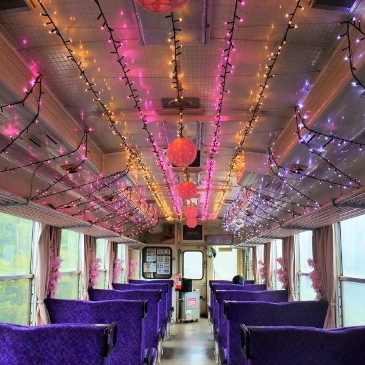
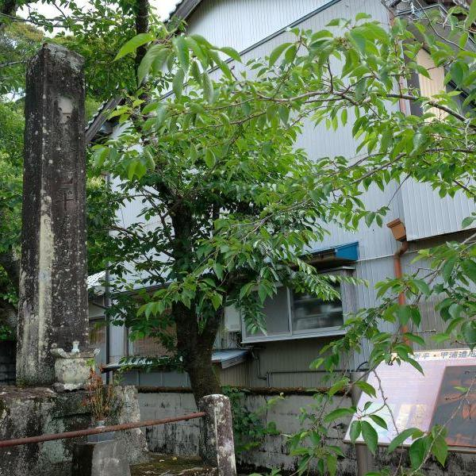
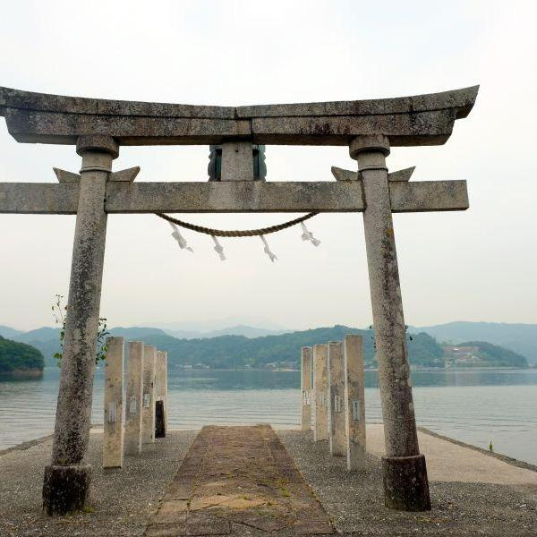
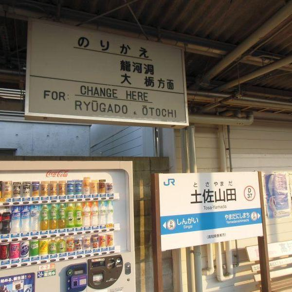
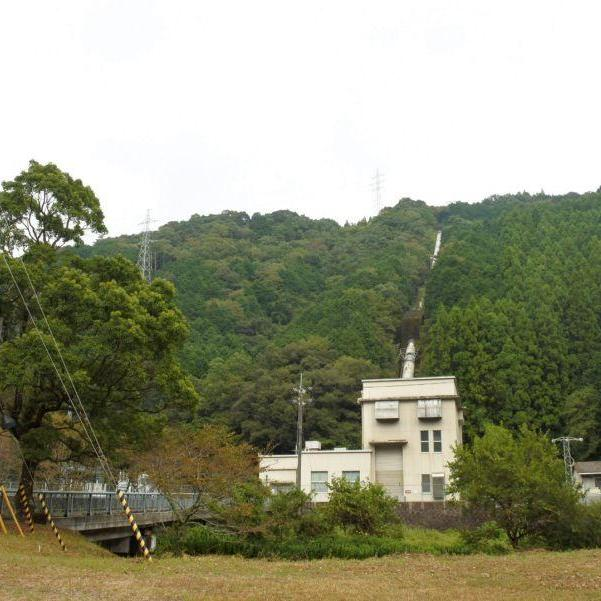
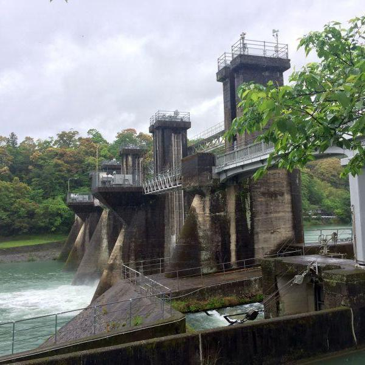
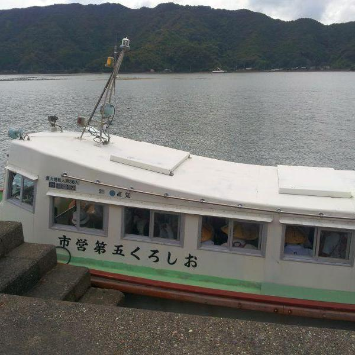
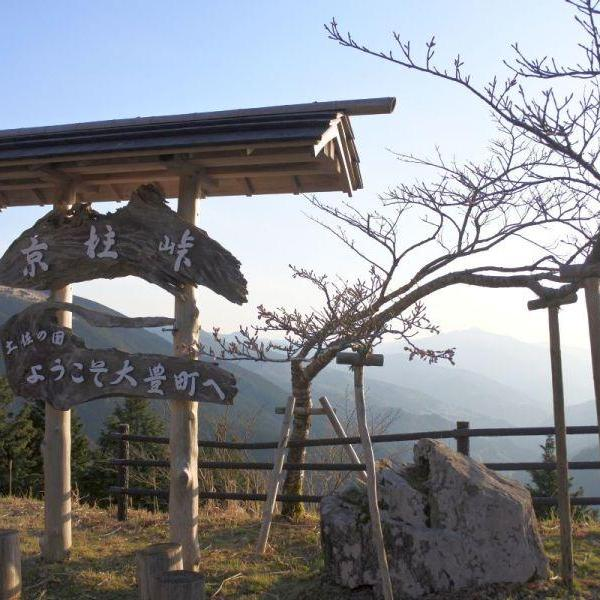
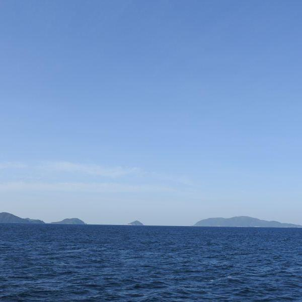

四国のおすすめ観光スポットをご紹介
高知アーカイブ
-

山
山奥に広がる天空の異空間 < 鳥形山森林植物公園 / 高知県仁淀川町 >
-
 公共交通機関
全長僅か8.5km。ミニ鉄道の終着駅 < 甲浦駅 / 高知県東洋町 >
-
県界
お地蔵さまが見守る県界のトンネル < 四ツ足峠トンネル / 徳島県那賀町木頭・高知県香美市物部 >
-
 歴史
江戸を東京と改めた男の最期の地 < 江藤新平遭厄記念碑 / 高知県東洋町 >
-
 寺社
縁結びにゆかりある、海から上陸する神社 < 鳴無神社 / 高知県須崎市 >
-
 公共交通機関
国鉄の末裔と、急勾配区間の先にあるスイッチバック駅 < JR土讃線 / 高知～土佐山田～新改 >
-

探検
全長196kmの清流が生まれる場所 < 四万十川源流点 / 高知県津野町 >
-
 歴史
四万十川の水が用いられる水力発電所 < 佐賀発電所 / 高知県黒潮町 >
-
 歴史
四万十川にはダムがあるのか、ないのか < 家地川取水堰 / 高知県四万十町 >
-
 フェリー
湾内を行き来する船は、子どもたちとお遍路さんとの貴重な足 < 須崎市営巡航船 / 高知県須崎市 >
-
 県界
有名酷道の峠は絶景スポット < 京柱峠 / 高知県大豊町・徳島県三好市 >
-
 フェリー
日本にもあった分断統治の島 < 沖の島 / 高知県宿毛市 >